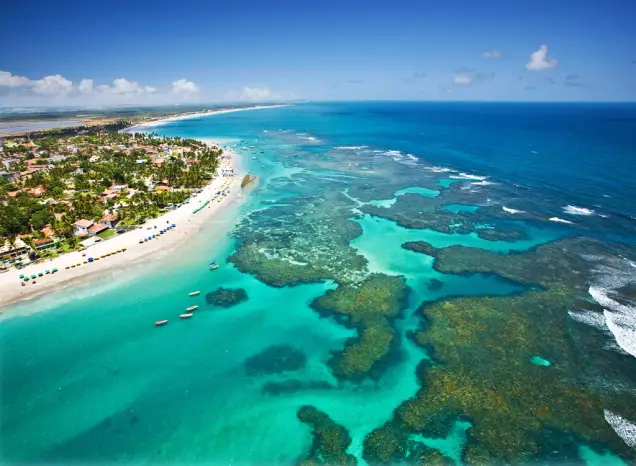
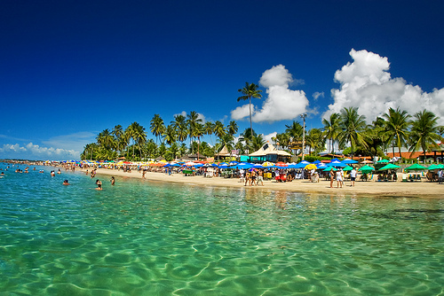

Porto de Galinhas é uma praia localizada no município de Ipojuca, no estado de Pernambuco, Brasil. A região possui piscinas de águas claras e mornas formadas entre corais, além de estuários, mangues, areia branca e coqueirais. Toda a região é muito frequentada por turistas e surfistas de diversas nacionalidades, tendo sido eleita pela revista Viagem e Turismo, da Editora Abril, como a "Melhor Praia do Brasil" por dez vezes consecutivas.
 Inicialmente, a praia era chamada de Porto Rico, devido à sua abundância em pau-brasil. No auge da escravidão no Brasil, era o principal ponto de comércio de escravos ilegais no nordeste brasileiro, que muitas vezes chegavam escondidos embaixo de engradados de galinhas-d'angola. A chegada dos escravos ilegais ao porto costumava ser anunciada pela frase tem galinha nova no porto! Desta forma, a praia de Porto Rico ficou conhecida como Porto de Galinhas. A partir do início da década de 1990, tornou-se um polo turístico. Isto gerou danos à vida marinha na região, obrigando o controle da atividade dos turistas a partir de 2014.
Sem dúvidas, a atração mais buscada em Porto de Galinhas são as piscinas naturais. Na maré baixa, é possível apreciar os incríveis recifes de corais no fundo do mar e ver os peixinhos de perto.
Vizinha de Porto de Galinhas, a Praia do Cupe fica distante apenas 5 km da vila. Embora seja uma praia de ondas fortes, favorável à prática de surf, existem muitos trechos com barreiras de corais que acabam formando piscinas naturais durante a maré baixa.
Se você está se perguntando onde ver o pôr do sol em Porto de Galinhas, Pontal de Maracaípe é o lugar certo! Este é um trecho da praia de Maracaípe onde as águas do rio Maracaípe encontram o mar.